地政学
モンロビアは大西洋に開く港湾首都で、リベリアの外交、援助、輸入、政治を束ねます。アメリカとの歴史、ECOWAS、マノ川流域、内戦後の国家再建が交差し、海の入口と制度の中心が岬に集まります。近隣国との移動を映します。
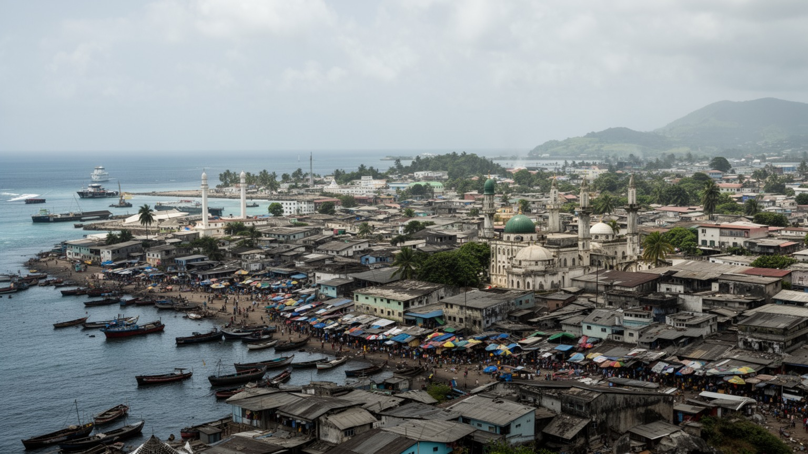
🇱🇷 リベリア / 西アフリカ大西洋岸 / World City Atlas
大西洋の自然港とプロビデンス島を起点に、国家行政、港湾物流、解放奴隷史、内戦後の復興、宗教、商業、海岸の脆弱な暮らしが重なるリベリアの首都です。
都市の骨格
モンロビアはリベリアの政治、港湾、商業、教育、報道の中心です。小さな岬と河口に国家機能が密集し、海岸侵食、洪水、住宅不足、復興経済が日常を形づくります。
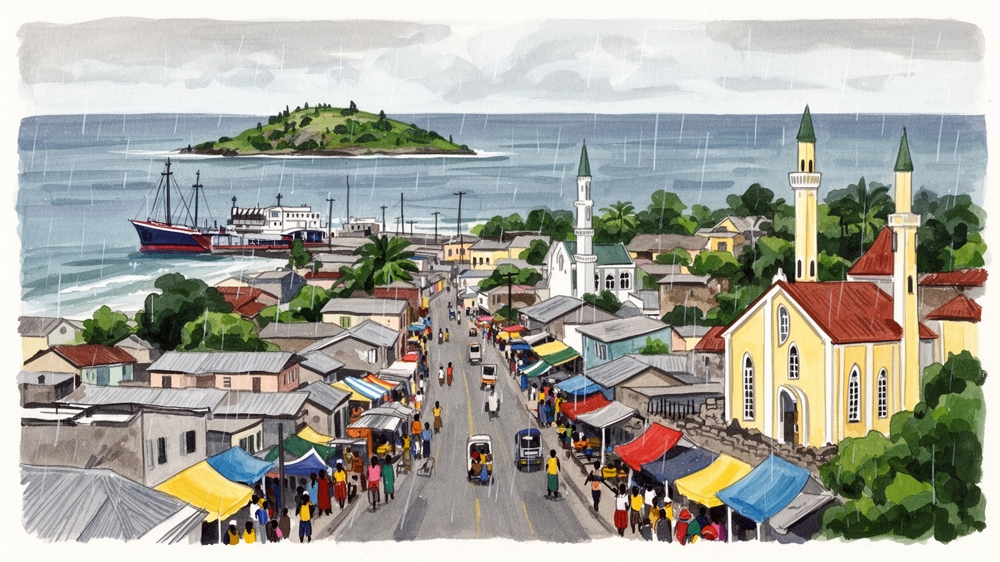
モンロビアは大西洋に開く港湾首都で、リベリアの外交、援助、輸入、政治を束ねます。アメリカとの歴史、ECOWAS、マノ川流域、内戦後の国家再建が交差し、海の入口と制度の中心が岬に集まります。近隣国との移動を映します。
自由港、官庁、銀行、通信、建設、市場、NGO、飲食、交通が雇用を作ります。正規職は限られ、露店、バイクタクシー、荷役、修理、清掃の仕事が大きく、若者の技能形成と安定収入が課題ですね。女性商人も街を支えます。
教会、モスク、伝統的共同体、リベリア英語、クルやバッサの海岸文化、アメリコ・ライベリアンの記憶が混ざります。日曜礼拝、葬儀、音楽、サッカー、学校行事が、内戦後の都市を結びます。ラジオの声も濃いです。
旅人はプロビデンス島、ブロード通り、海岸、国立博物館、市場、港の景観を歩きます。住民には水、電力、排水、家賃、交通、海岸侵食、教育費が現実で、首都の活力と脆さが近いです。雨季の移動も重いですよね。
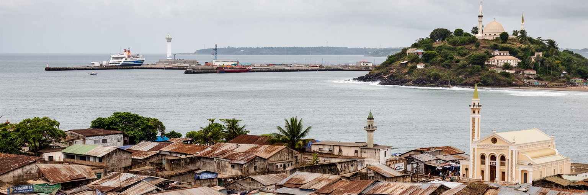
モンロビアは、リベリアを外の世界へつなぐ最も重要な入口です。メスラード岬と河口に囲まれた自然港は、戦時中の整備や戦後の復旧を経て、燃料、食料、建材、車両、機械、援助物資、消費財を受け入れる国家物流の要になりました。国土の道路網や鉄道が十分に広がらない国では、港に入る貨物の遅れや費用が、市場価格、建設費、発電、医療用品、学校の備品にまで響きます。港湾労働者、通関業者、トラック運転手、倉庫の作業員、修理工、警備員、露店商は、世界経済を日々の収入へ変える人たちです。同時に、港は国家の税収、汚職対策、治安、国際基準、労働安全がぶつかる場所でもあります。輸入に強く依存する都市では、為替、燃料価格、海運の混乱がすぐ生活費へ届きます。自由港周辺の渋滞、道路の傷み、排水、住宅の近接は、物流が都市環境へ与える負荷を示します。モンロビアの港を眺めることは、船だけを見ることではありません。港が止まれば国が止まり、港が効率化すれば商いも行政も少し動きやすくなります。周辺の鉄鉱石、ゴム、木材、農産物がどの経路で出入りするかも、首都の道路と倉庫の需要を変えます。港の透明性は税収だけでなく、国民が政府を信じられるかにも関わります。小さな首都の海辺に、リベリアの外貨、食料安全保障、雇用、国家歳入が集中している点が、この都市の地政学的な重さです。
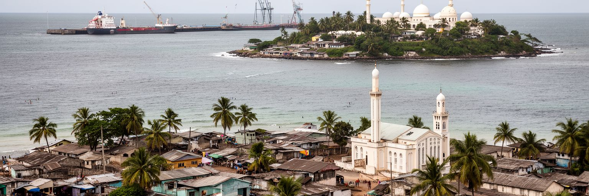
モンロビアの歴史は、プロビデンス島とメスラード岬を抜きに語れません。十九世紀初頭、アメリカ植民協会の支援を受けた自由黒人や解放奴隷の移住者がこの河口へ到着し、やがてリベリアという共和国の政治的な中心が形成されました。都市名がアメリカ大統領ジェームズ・モンローに由来することも、リベリアの建国が大西洋を横断する人種、奴隷制、植民、帰還の複雑な歴史と結びつくことを示しています。ただし、建国の物語は移住者だけの物語ではありません。沿岸に暮らしていた先住の共同体、土地交渉、権力の偏り、アメリコ・ライベリアン支配、内陸諸民族との関係も同時に存在しました。記念碑としてのプロビデンス島は、自由と帰還を象徴する一方で、誰の自由が語られ、誰の土地や声が後ろへ押しやられたのかを問う場所でもあります。学校、博物館、式典、観光案内でこの歴史を扱う時、単純な栄光や悲劇だけでは不十分です。モンロビアの街路には、アメリカ的な政治制度、英語、教会、沿岸アフリカの商業、内陸から移ってきた人々の生活が重なります。墓地、古い教会、家名、独立記念日の儀礼にも、記憶の層が残ります。若い世代がその歴史をどう学ぶかは、和解と市民意識にも関わります。建国記憶を丁寧に読むほど、首都は一つの起源ではなく、複数の到着と衝突から成り立つ都市として見えてきます。
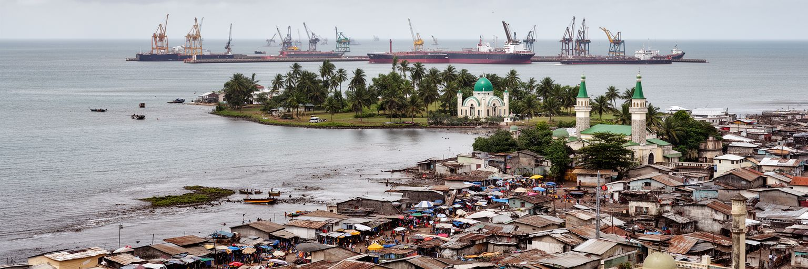
モンロビアは、大統領府、議会、裁判所、省庁、外交団、国際機関、報道機関が集まる政治首都です。リベリアの内戦は国家機能、道路、学校、病院、信頼関係を深く傷つけました。和平後の首都は、建物を直すだけでなく、選挙、治安、財政、司法、地方行政、汚職対策、公共サービスを再び使える制度へ戻す仕事を担ってきました。首都への集中は、意思決定を速くする一方で、地方から見れば資源がモンロビアへ偏る感覚も生みます。国の予算や援助案件が市内の会議室で決まる時、その結果は内陸の道路、農村の診療所、国境の治安、学校の教員配置へ届きます。政治は官庁街の中だけでなく、ラジオ、新聞、教会、大学、市場、タクシーの会話にも広がります。若い有権者にとって、民主主義は抽象的な制度ではなく、仕事、電気、水、学費、警察、道路の改善として評価されます。国際援助の存在感が大きい都市では、外部資金が不可欠である一方、政策の優先順位が住民の声から離れる危険もあります。抗議や報道の自由が保たれるかも、首都の公共空間を測る重要な基準です。政権交代の平穏さも信頼を支えます。モンロビアの政治を読むには、選挙結果だけでなく、窓口で書類が進むか、裁判が信頼されるか、行政が市場や集落まで届くかを見る必要があります。首都の再建は、国家が住民から再び信用される過程そのものです。
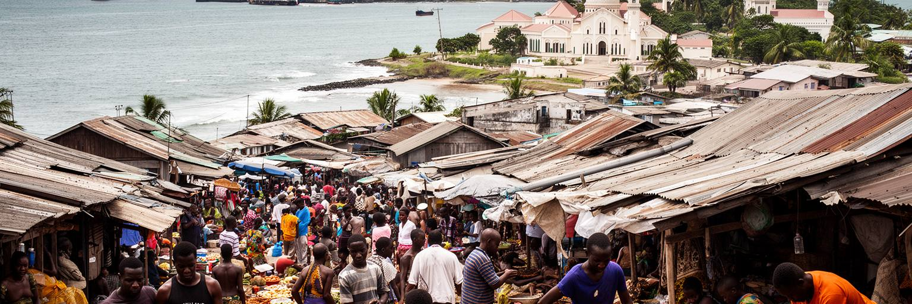
モンロビアの経済は、港、官庁、銀行、通信会社、ホテル、建設現場、学校、病院だけでなく、広いインフォーマル労働によって支えられています。ウォーターサイドや周辺市場では、輸入品、古着、食料、携帯電話部品、日用品が細かな取引を通じて住民の手に渡ります。露店商、荷運び、バイクタクシー、乗合車の運転手、修理工、清掃労働者、家事労働者、警備員、港周辺の補助作業員は、都市の流れを止めない存在です。正規の給与職が限られる中で、多くの若者は日雇い、家族商売、小さなサービス業から収入を得ます。内戦後の世代にとって、技能訓練、読み書き、会計、デジタル決済、信用へのアクセスは、安定した仕事へ移る大切な橋になります。一方で、路上経済は立ち退き、警察との交渉、天候、盗難、病気、燃料価格に弱いです。都市を整える政策が、商人を排除するだけなら生活基盤を壊します。反対に、衛生設備、保管場所、歩行空間、透明な料金、女性商人の安全、若者の訓練を整えれば、市場は雇用と税収を生む公共空間になります。銀行口座を持たない人にも届く小口金融や携帯決済は、小商いの継続を助けます。モンロビアの労働を読むには、オフィスの数字と、朝から品物を運ぶ人の身体を同じ経済として見る必要があります。首都の活力は、公式部門と路上の工夫が絡み合うところにあります。
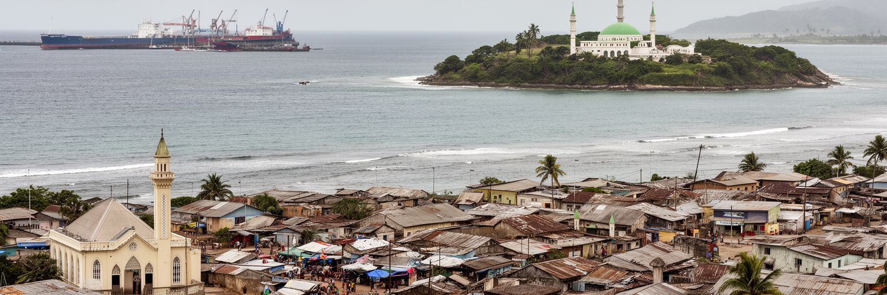
モンロビアの都市形は、美しい大西洋岸の景観と同時に、非常に脆い地形の上にあります。岬、砂浜、河口、湿地、低地の集落が入り組み、長い雨季には排水の弱さがすぐ浸水や道路の寸断につながります。西ポイントのような海岸部の密集地区では、海岸侵食、高潮、衛生、住宅の過密が重なり、気候変動は遠い将来の問題ではなく日常の不安です。雨が強まると、未舗装路、排水溝、ごみ、下水、川の水位が連動し、学校や市場へ行く動線が変わります。海辺に近い暮らしは、漁業、商い、港への近さを与える一方、家屋の流失や移転の危険も持ちます。都市計画では、護岸だけでなく、湿地の保全、廃棄物管理、雨水路、早期警戒、避難先、低所得層の住宅政策を合わせて考える必要があります。気候リスクは貧しい人ほど早く経験します。日雇い労働者が雨で働けない日、子どもが冠水した道を渡る朝、病院までの交通費が増える夜に、気候は生活問題になります。港湾施設や幹線道路を守る投資は重要ですが、同じくらい集落の排水、トイレ、水道、橋、学校の安全も大切です。地図上の危険区域を住民と共有し、避難や補修の優先順位を透明にすることも信頼を作ります。モンロビアを読む時、海の開放感と雨季の脆弱さを切り離せません。首都の未来は、海辺に暮らす人を移すか残すかではなく、尊厳を守りながらリスクを減らす制度を作れるかにかかっています。
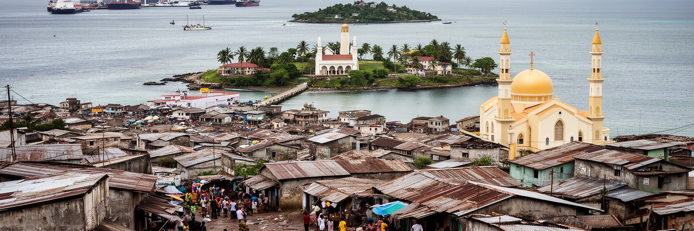
モンロビアの宗教生活は、教会、モスク、家庭の祈り、葬儀、結婚式、学校、慈善活動を通じて街の深いところに広がっています。リベリアではキリスト教の存在感が大きい一方、イスラム共同体や伝統的な信仰、民族ごとの儀礼も都市生活の一部です。内戦、エボラ出血熱の危機、貧困、失業、家族離散を経験した社会では、宗教組織が精神的な支えだけでなく、情報共有、相互扶助、教育、保健、和解の場になってきました。日曜の礼拝や金曜の祈りは、信仰の時間であると同時に、仕事の紹介、病気の相談、葬儀費用の協力、若者のしつけを話し合う社会的な時間でもあります。宗教は人を結ぶ力を持ちますが、政治、ジェンダー、若者文化、少数派との関係では緊張を生むこともあります。だからこそ都市の公共性は、特定の信仰だけに閉じず、異なる共同体が尊重される形で作られる必要があります。教会の音楽、ゴスペル、イスラムの祝日、伝統的な儀礼、英語と各民族語の説教は、モンロビアの音の風景を作ります。学校や診療所を運営する宗教団体もあり、公共サービスと信仰の境界は日常で交差します。宗教施設は観光名所としてだけでなく、地域の安全網として見るべきです。国家の福祉が薄い場面で、共同体は住民の最後の頼りになります。モンロビアの信仰を読むことは、復興後の社会がどのように悲しみを共有し、未来への規律と希望を作っているかを見ることです。
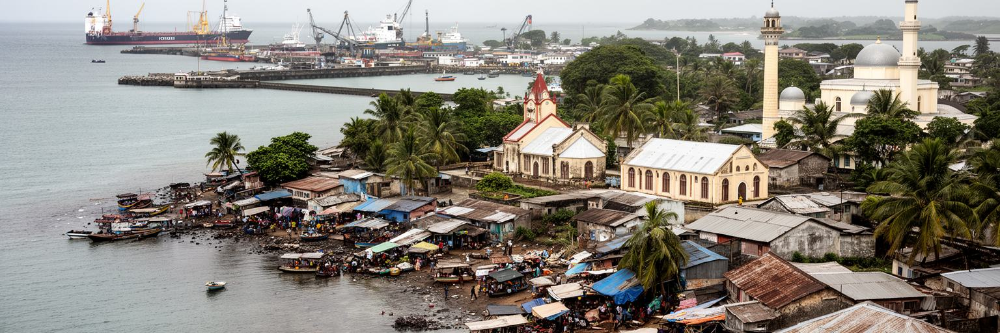
モンロビアの文化は、英語を公用語とする国家の首都でありながら、単一の言語や生活様式には収まりません。リベリア英語、クル、バッサ、クペレ、グレボ、マンデ系の言語、隣国から来た人々の言葉、アメリカ文化の影響、教会音楽、ヒップコ、サッカー、ラジオ、SNSが混ざり合います。学校や官庁では英語が制度の言語になりますが、市場、家庭、乗合車、海岸の集落では、出身地や世代によって言葉が切り替わります。この切り替えは、都市で生きる技能でもあります。アメリコ・ライベリアンの歴史は、建築、姓、政治制度、服装、礼儀、宗教に影を落とし、内陸諸民族の文化や周辺国との交流と重なります。都市文化は博物館や記念碑だけでなく、ラジオ番組の冗談、サッカー観戦、卒業式の服、葬儀の歌、路上の食事、海岸で過ごす夕方にも表れます。若者はスマートフォンを使って国外の音楽やファッションに触れながら、地元の言葉と家族の期待の中で進路を選びます。文化の混交は魅力である一方、教育格差や階層差も映します。標準的な英語に近い人ほど官庁や企業で有利になり、路上の言葉で暮らす人は制度から遠ざかることがあります。モンロビアを文化都市として読むには、公式の建国記憶と、日々変化する若者の声を同じ価値で扱う必要があります。多くの声が交わること自体が、首都の現代性です。
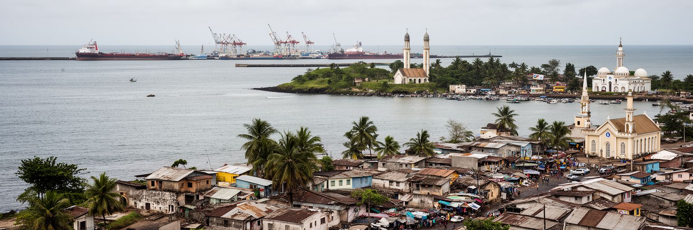
モンロビアの日常を左右するのは、首都らしい官庁や港だけではありません。住宅、水道、電力、排水、ごみ収集、学校、診療所、交通、治安が、住民にとって都市の価値を決めます。内戦中と戦後に多くの人が首都へ流入し、都市は急速に密集しました。家族や親族を頼って狭い部屋に住む人、低地や海岸部の不安定な土地に家を建てる人、郊外から長い時間をかけて通う人がいます。電気が安定しない時、家庭は発電機、充電サービス、暗い夜道に頼らざるを得ません。水道やトイレの不足は、女性や子ども、高齢者の負担を大きくします。ごみが排水路に詰まれば、雨季の浸水と感染症の危険が増えます。都市サービスの不足は、単なる不便ではなく、時間、健康、教育、収入を奪う問題です。一方で、住民組織、教会、学校、NGO、小さな事業者が、行政の手が届かない隙間を埋めることも多いです。行政がインフラを整える際には、立ち退きや料金徴収だけを急ぐのではなく、住民が払える費用、女性の安全、子どもの通学、非公式な商いの場所を考える必要があります。土地権利が不明確な場所では、住民が家を直す判断も難しくなります。モンロビアの住宅問題は、貧困地区を見下ろす話ではなく、首都が住民を都市の一員として扱うかを問う話です。暮らせる首都は、港の効率と同じくらい、路地の水はけや夜の明かりで測られます。
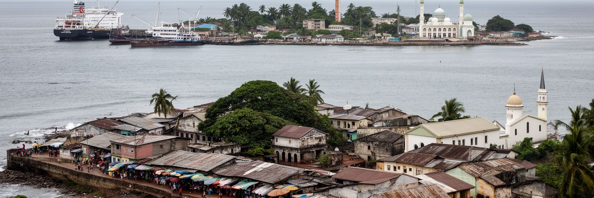
モンロビア観光は、大量の観光客を受け入れるリゾート型ではなく、歴史と都市生活を近い距離で読む旅に向いています。プロビデンス島、国立博物館、ブロード通り、官庁街、海岸、港を望む場所、市場、教会、モスク、ホテル地区を歩くと、建国、貿易、内戦、復興、若者文化が短い範囲に重なります。ビーチや大西洋の夕景は魅力ですが、観光は安全、交通、衛生、案内、文化財保全、地域への収入還元が整ってこそ持続します。訪問者が建国史だけを消費すると、現在の住民の苦労や誇りは見えにくくなります。反対に、市場で食べ、地元の案内人から話を聞き、博物館で複数の歴史を学び、海岸の環境問題にも目を向ければ、旅は都市への理解になります。観光産業はホテル、運転手、ガイド、飲食、警備、清掃、手工芸の仕事を生みますが、政治不安や感染症、航空便、国際報道に左右されやすいです。だからこそ、国内観光、学校教育、地域の文化活動と結びつけることが大切です。案内板や博物館展示が複数の言語と視点を持てば、旅の質も上がります。モンロビアの記憶は、記念碑だけではなく、修復された建物、空き地、戦争を語る家族、海岸で遊ぶ子ども、ラジオから流れる音楽にも残ります。旅人にとって重要なのは、首都を危険や貧困のイメージだけで見るのではなく、回復しながら生活を作り直す都市として歩くことです。
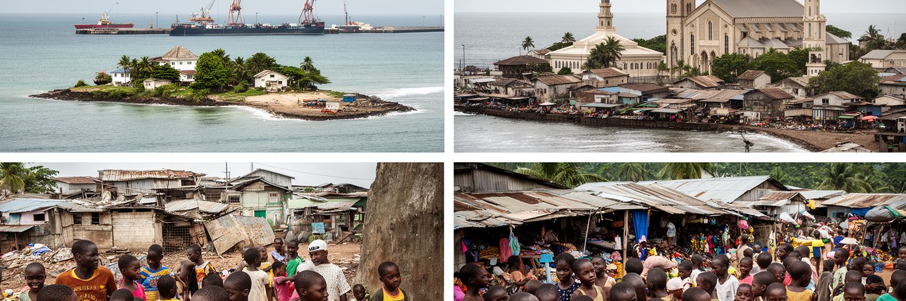
モンロビアは若い人口のエネルギーを強く感じる都市です。学校へ通う子ども、職業訓練を探す若者、携帯電話で商売をする人、バイクタクシーの運転手、大学生、路上で仕事を待つ人が、首都の通りにあふれています。若さは都市の力ですが、教育の質、学費、就職先、治安、薬物問題、ジェンダー暴力、早すぎる妊娠、心の傷と向き合う制度が弱ければ、不安にも変わります。内戦を直接知らない世代でも、家族の記憶、貧困、学校の中断、都市サービスの不足を通じて過去の影響を受けています。政府やNGOは教育、保健、起業支援、平和構築を進めますが、短期の研修だけでは安定した雇用を作れません。港湾、建設、デジタルサービス、修理、農産物の流通、観光、保健、教育で実際の仕事につながる技能が必要です。若者が政治に期待を持てるかどうかは、選挙の熱気よりも、卒業後に働けるか、警察に公正に扱われるか、家賃を払えるかで決まります。女性や障害のある若者が安全に学び働ける環境も、都市の成熟度を示します。モンロビアの社会課題は重いですが、若者の工夫や相互扶助も強いです。小さな店、音楽、スポーツ、教会の青年会、オンラインの商売は、希望を日常の形にしています。地域の図書館や運動場も、暴力から離れる居場所になります。首都の未来は、この若い力を非公式な忍耐に任せず、制度と市場が支えられるかにかかっています。
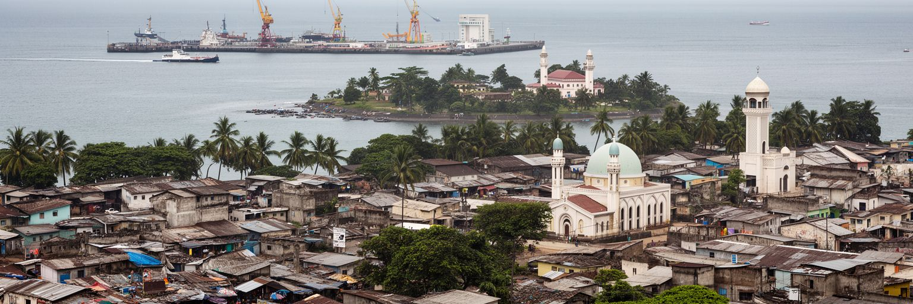
モンロビアは、世界最大の経済都市ではありません。しかし世界の都市を理解するうえで重要なのは、この首都が大西洋史、奴隷制後の帰還、アフリカの共和国建設、内戦後の国家再建、港湾物流、気候リスク、若者の雇用を一つの場所に集めているからです。プロビデンス島は建国の記憶を示し、自由港は今日の輸入経済を動かし、官庁街は制度の再建を試み、市場と海岸の集落は住民の生活力と脆弱さを見せます。ここでは、国家の象徴と排水溝の詰まり、国際援助と路上商売、海の開放感と侵食の恐怖が近い距離にあります。モンロビアを読む時に大切なのは、貧困や危機の都市としてだけ固定しないことです。住民は日々、学校へ行き、品物を売り、祈り、音楽を聴き、海を眺め、家族を支え、行政に要求しながら街を作っています。同時に、港への依存、輸入価格、住宅不足、気候災害、若者の仕事不足は、都市の将来を厳しく制約します。モンロビアは、国家がどのように過去を記憶し、外の世界と結び、弱い住民を守り、若い世代へ機会を渡すかを問い続ける場所です。港のクレーン、教会の歌、市場の声、雨季の水たまりを同じ地図に置くと、リベリアの現在が具体的に見えてきます。規模の小ささではなく、歴史と生活の近さが都市の密度を作っています。その複雑さこそが、この都市を読む価値です。